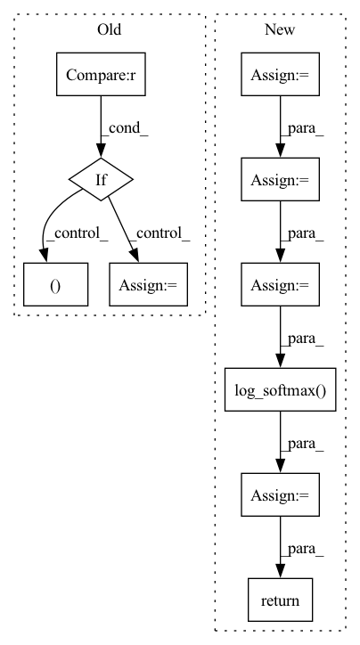

Pattern ID :36751

Before Change
score = F.log_softmax(y, dim=2)
// 因为是补齐了的，所以需要找到真正的 score
for i in range(score.shape[0]):
if i == 0:
true_scores = score[i][loc_len[i] - 1].reshape(1, -1)
else:
true_scores = torch.cat(
(true_scores, score[i][loc_len[i] - 1].reshape(1, -1)), 0)
return true_scores
def predict(self, batch):
After Change
// batch_size * state_len * 2 x input_size
out = torch.cat((hidden_state, context), 2)
// 因为是补齐了的，所以需要找到真正的 out
origin_len = batch.get_origin_len("current_loc")
final_out_index = torch.tensor(origin_len) - 1
final_out_index = final_out_index.reshape(final_out_index.shape[0], 1, -1)
final_out_index = final_out_index.repeat(1, 1, 2*self.hidden_size).to(self.device)
out = torch.gather(out, 1, final_out_index).squeeze(1) // batch_size * (2*hidden_size)
out = self.dropout(out)
y = self.fc_final(out) // batch_size * loc_size
score = F.log_softmax(y, dim=1)
return score
def predict(self, batch):
return self.forward(batch)
In pattern: SUPERPATTERN
Frequency: 3
Non-data size: 10
Instances
Fragment ID: 104829758
Project Name: libcity/bigscity-libcity
Commit Name: ec61c9cd984d1c86ee715380ed3b65b4222c8d1f
Time: 2021-05-06
Author: 33283819+WenMellors@users.noreply.github.com
File Name: trafficdl/model/trajectory_loc_prediction/DeepMove.py
M Class Name: DeepMove
N Class Name: DeepMove
M Method Name: forward(2)
N Method Name: forward(2)
M Parent Class: AbstractModel
N Parent Class: AbstractModel
M File Name: trafficdl/model/trajectory_loc_prediction/DeepMove.py
N File Name: trafficdl/model/trajectory_loc_prediction/DeepMove.py
M Start Line: 122
M End Line: 175
N Start Line: 152
N End Line: 163
'>
Before Change
// Transcription network: input-output dependency
TN_output = params.encoder_crdnn(feats, init_params=init_params)
TN_output = params.encoder_lin(TN_output, init_params)
if stage == "train":
_, targets, _ = y
targets = targets.to(params.device)
// Prediction network: output-output dependency
decoder_input = prepend_bos_token(
targets, bos_index=params.blank_id
)
PN_output = params.decoder_embedding(
decoder_input, init_params=init_params
)
PN_output, _ = params.decoder_gru(
PN_output, init_params=init_params
)
PN_output = params.decoder_lin(PN_output, init_params=init_params)
// Joint the networks
joint = params.Tjoint(
TN_output.unsqueeze(2),
PN_output.unsqueeze(1),
init_params=init_params,
)
// projection layer
outputs = params.output(joint, init_params=init_params)
outputs = params.log_softmax(outputs)
return outputs, lens
else:
hyps, scores = transducer_greedy_decode(
TN_output,
[
params.decoder_embedding,
params.decoder_gru,
params.decoder_lin,
],
params.Tjoint,
[params.output],
params.blank_id,
)
return hyps, scores
def compute_objectives(self, predictions, targets, stage="train"):
ids, phns, phn_lens = targets
After Change
_, targets, _ = y
targets = targets.to(self.device)
// Prediction network: output-output dependency
decoder_input = sb.data_io.prepend_bos_token(
targets, bos_index=self.hparams.blank_id
)
PN_output = self.modules.emb(decoder_input)
PN_output, _ = self.modules.dec(PN_output)
PN_output = self.modules.dec_lin(PN_output)
// Joint the networks
joint = self.modules.Tjoint(
TN_output.unsqueeze(2), PN_output.unsqueeze(1),
)
// projection layer
outputs = self.modules.output(joint)
outputs = self.hparams.log_softmax(outputs)
if stage == sb.Stage.TRAIN:
return outputs, lens
else:
hyps, scores = transducer_greedy_decode(
TN_output,
[self.modules.emb, self.modules.dec, self.modules.dec_lin],
self.modules.Tjoint,
[self.modules.output],
self.hparams.blank_id,
)
return outputs, lens, hyps
def compute_objectives(self, predictions, targets, stage):
ids, phns, phn_lens = targets
'>
Fragment ID: 104830013
Project Name: speechbrain/speechbrain
Commit Name: 6f252e43bf5eaabf7c9f5fc881571c72c09321d5
Time: 2020-11-02
Author: a.heba@irit.fr
File Name: recipes/minimal_examples/neural_networks/ASR_Transducer/example_asr_transducer_experiment.py
M Class Name: TransducerBrain
N Class Name: TransducerBrain
M Method Name: compute_forward(4)
N Method Name: compute_forward(5)
M Parent Class: sb.Brain
N Parent Class: sb.core.Brain
M File Name: recipes/minimal_examples/neural_networks/ASR_Transducer/example_asr_transducer_experiment.py
N File Name: recipes/minimal_examples/neural_networks/ASR_Transducer/example_asr_transducer_experiment.py
M Start Line: 22
M End Line: 68
N Start Line: 11
N End Line: 45
'>
Before Change
// 因为是补齐了的，所以需要找到真正的 score
loc_len = batch.get_origin_len("current_loc")
for i in range(score.shape[0]):
if i == 0:
true_scores = score[i][loc_len[i] - 1].reshape(1, -1)
else:
true_scores = torch.cat(
(true_scores, score[i][loc_len[i] - 1].reshape(1, -1)), 0)
return true_scores
def predict(self, batch):
After Change
out, out_len = pad_packed_sequence(out, batch_first=True)
// out = out.permute(1, 0, 2)
origin_len = batch.get_origin_len("current_loc")
final_out_index = torch.tensor(origin_len) - 1
final_out_index = final_out_index.reshape(final_out_index.shape[0], 1, -1)
final_out_index = final_out_index.repeat(1, 1, self.hidden_size).to(self.device)
out = torch.gather(out, 1, final_out_index).squeeze(1) // batch_size * hidden_size
out = F.selu(out)
out = self.dropout(out)
y = self.fc(out)
score = F.log_softmax(y, dim=1) // calculate loss by NLLoss
return score
def predict(self, batch):
return self.forward(batch)
'>
Fragment ID: 104830220
Project Name: libcity/bigscity-libcity
Commit Name: ec61c9cd984d1c86ee715380ed3b65b4222c8d1f
Time: 2021-05-06
Author: 33283819+WenMellors@users.noreply.github.com
File Name: trafficdl/model/trajectory_loc_prediction/RNN.py
M Class Name: RNN
N Class Name: RNN
M Method Name: forward(2)
N Method Name: forward(2)
M Parent Class: AbstractModel
N Parent Class: AbstractModel
M File Name: trafficdl/model/trajectory_loc_prediction/RNN.py
N File Name: trafficdl/model/trajectory_loc_prediction/RNN.py
M Start Line: 87
M End Line: 97
N Start Line: 84
N End Line: 94